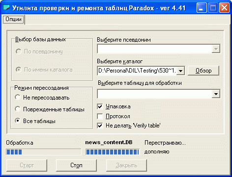

В процессе эксплуатации интернет-магазина вследствие сбоев питания, некорректного завершения работы и других неблагоприятных факторов может возникнуть повреждение таблиц с данными. Для устранения указанных повреждений следует воспользоваться утилитой проверки и ремонта таблиц, вызываемой из главного меню программы "Утилиты - Локальная база данных - Проверка целостности таблиц данных":

По завершении обработки выдается сообщение:
В ряде случаев программа сама предлагает провести проверку целостности, выдавая при запуске предупреждение-запрос:
После восстановления рекомендуется выполнить оптимизацию данных. Утилита оптимизации вызывается из главного меню программы Melbis Shop "Улилиты - Локальная база данных - Оптимизация данных".